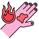

Burning
Rx
1.Cream silver Sulfadiazine N=1 q12h
2.Oint Fibrinolysin N=1 q8h
3.Serum NS N=30 q8h
4.Cap Mefenamic Acid N=20 q8h
5.Tab Hydroxyzine 25mg N=20 q8h
6.Cap Cephalexin 500mg N=3 q6h
موارد نیاز به اعزام:
سوختگی درجه ۳
سوختگی درجه ۲ بیشتر از ۲۰%
سوختگی الکتریکی؛ شیمیایی؛ استنشاقی
سوختگی دست؛ پا؛ پرینه؛ صورت؛ مفاصل
سوختگی درجه ۲ و بیشتر در اطفال و افراد مسن
سوختگی و بیماری زمینهای
سوختگی و تروما
نکته: این نسخه برای سوختگی های جزئی است ، سرم تراپی و منیج بیمار سوختگی در کتاب مطالعه بفرمایید
نکته: محل سوختگی در آب سرد قرار دهید.
نکته: سوختگی به عنوان یک زخم کثیف در نظر گرفته میشه لذا همیشه واکسن کزاز را مدنظر داشته باشین.
نکته: لازمه تاولهایی که ترکیدهاند از روی پوست دبرید بشن. ولی در خصوص تاولهای سالم با توجه به ریسک ایجاد عفونت نیازی به
1️⃣ سلولیت
2️⃣ سندرم استیون جانسون
TEN 3️⃣
4S 4️⃣
bullous impetigo 5️⃣
Child abuse 6️⃣ در کودکان و در موارد درگیری باسن پرینه و اندام تحتانی با الگوی خاص